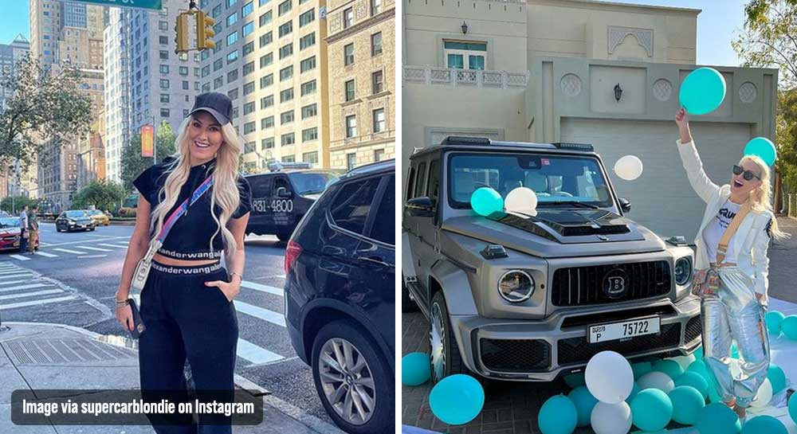
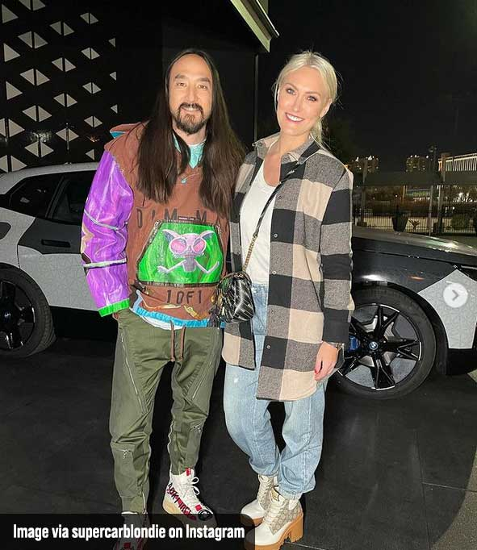

Men Made Fun of Alex Hirschi for Her Love for Supercars; She Owns A Collection Now
Today’s story is about a queen who never let anyone stop her from achieving her dreams. Australian-born Alexandra Mary Hirschi, also known as Supercar Blondie, is a massive social media influencer in the world of sports cars, supercars, ultra-luxury cars, you name it.
Today, she’s the most well-known woman to represent the supercar industry – holding millions upon millions of dedicated and supportive followers on social media. But things weren’t easy for her when she began.
Alex Hirschi always loved cars and everything about cars. But sadly, we live in a world where a lot of unnecessary “norms” exist. Alex wanted to be in the supercar, sports car industry – the majority of it is dominated by men, and they gave her a tough time when she started off.
“I felt hugely judged in this space when I was starting out. I didn’t just feel judged, I was judged.” “I was almost always the only woman in the room at car events.” “I was talking about cars in layman’s terms so that we could all understand and be a part of this world.” “The car world was always so intimidating. I wanted to open it up to more people but it was a hard slog, to begin with.”
But Alex didn’t let any of that stop her. Her passion for supercars kept her going, making her unstoppable. But even after the fame, she still gets a lot of negativity from some people on social media. Alex continues:
Alexandra Hirschi is a true queen of today’s generation of influencers; she’s the embodiment of success. In an industry where she received a very challenging time, she stayed true to herself and her dreams – making her the most influential person in the supercar industry today!